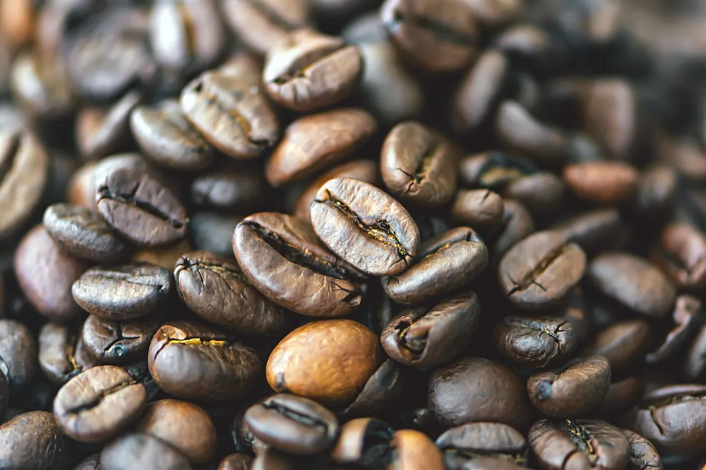

Sumérgete en el apasionante universo del café en el Coffee Fest, un evento imprescindible para los amantes del café. Durante varios días, Madrid se convierte en el punto de encuentro de baristas, expertos y curiosos que comparten una misma pasión: descubrir, degustar y aprender todo sobre el café. Vive una experiencia única llena de aromas, sabores y creatividad en un ambiente dinámico y lleno de energía.
El Coffee Fest es un evento gastronómico dedicado al fascinante mundo del café. Reúne a baristas, tostadores, productores y amantes del café en un espacio donde se celebra la cultura cafetera en todas sus dimensiones. Es una oportunidad única para descubrir nuevos sabores, conocer el origen del café y explorar las últimas tendencias en su preparación.
El evento ofrece una experiencia completa tanto para aficionados como para expertos:
El objetivo es que los asistentes no solo disfruten del café, sino que aprendan a apreciarlo desde una perspectiva más profunda.
El Coffee Fest se celebra en espacios urbanos amplios como centros de convenciones, recintos feriales o espacios culturales adaptados para eventos. Estas localizaciones permiten crear diferentes zonas para actividades, degustaciones y descanso, ofreciendo una experiencia cómoda y enriquecedora para todos los visitantes.
El Coffee Fest 2026 se celebra en la ciudad de Madrid, concretamente en el recinto ferial IFEMA Madrid, uno de los espacios más importantes para eventos en España. Tiene lugar en el pabellón 14 de IFEMA, del 14 al 16 de febrero de 2026, y forma parte de un evento anual que normalmente se celebra cada año en esta misma ciudad.